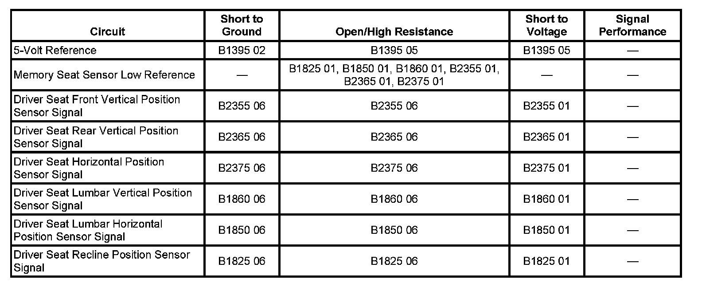

Seat System Diagnosis
DTC B1395
DTC DESCRIPTOR
DTC B1395 02
Device Voltage Reference Output Circuit Shorted to Ground
DTC B1395 05
Device Voltage Reference Output Circuit Shorted to Battery or Open
DIAGNOSTIC FAULT INFORMATION

Perform the Diagnostic System Check - Vehicle prior to using this diagnostic procedure. Initial Inspection and Diagnostic Overview
CIRCUIT/SYSTEM DESCRIPTION
The memory seat module (MSM) supplies a 5-volt reference voltage to the driver seat and adjustable pedal position sensors. The MSM monitors this reference voltage to ensure the accuracy of the voltages being returned from the sensors. If the voltage exceeds the normal operating range, errors will occur in the memory recall operations of the seat and adjustable pedals.
CONDITIONS FOR RUNNING THE DTC
The memory seat module must be powered.
CONDITIONS FOR SETTING THE DTC
The following conditions exist for more than 1 second:
B1395 02
The reference voltage drops below 4.75 volts.
B1395 05
The reference voltage exceeds 5.15 volts.
ACTION TAKEN WHEN THE DTC SETS
All memory recall functions will be disabled.
CONDITIONS FOR CLEARING THE DTC
- The current DTC will clear 3 seconds after the reference voltage returns to normal operating range, and the ignition is cycled OFF then back to ACC or RUN.
- A history DTC will clear after 50 ignition cycles or with a scan tool using the clear DTCs function.
DIAGNOSTIC AIDS
An internal short to ground in one of the position sensors may set this DTC.
CIRCUIT/SYSTEM TESTING
Ignition ON, test for 4.75-5.15 volts between the 5-volt reference circuit and ground.
- If less than 4.75 volts, test the 5-volt reference circuit to all position sensors for a short to ground or an open. If the circuit tests normal, replace the memory seat module.
- If greater than 5.15 volts, test the 5-volt reference circuit to all position sensors or a short to voltage. If the circuit tests normal, replace the memory seat module.
Repair Instructions
Perform the Diagnostic Repair Verification after completing the diagnostic procedure.
- Front Seat Adjuster Replacement (Power)
- Front Seat Lumbar Support Replacement (Power)
- Front Seat Recliner Actuator Motor Replacement
- Brake Pedal Assembly Replacement
- Control Module References for MSM replacement, setup, and programming Verification Tests Programming and Relearning